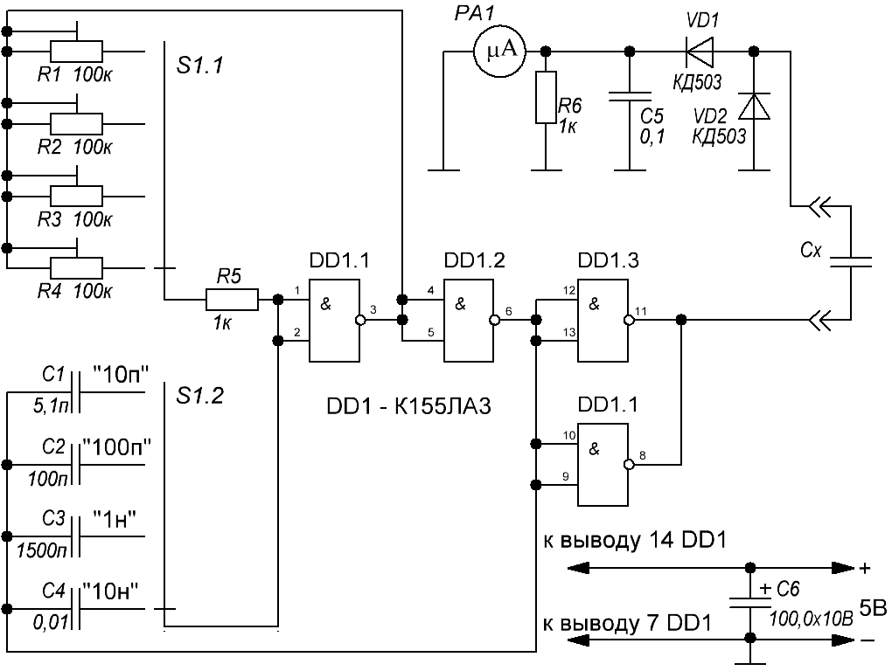

Измеритель емкости на микросхеме К155ЛА3
Прибор предназначен для измерения емкости конденсаторов от 0,5 пф до 10000 пФ. Большинство описанных в литературе измерителей емкости построены на принципе измерения частоты или периода импульсов, вырабатываемых генератором, в частото-задающей цепи которого включается измеряемый конденсатор.
Более прост способ определения емкости по величине реактивного сопротивления этого конденсатора при подаче через него импульсов определенной частоты от генератора на простой измеритель переменного напряжения. Фактически емкость здесь выполняет роль добавочного резистора.

Рис. 1 - Схема измерителя емкости
На логических элементах ТТЛ DD1.1 и DD1.2 собран мультивибратор, частота которого зависит от сопротивления резистора включенного между входом и выходом D1.1 и от величины емкости между входом DD1.1 и выходом DD1.2. Для каждого предела измерения устанавливается определенная частота при помощи переключателя S1, одна секция которого переключает резисторы R1-R4, а другая конденсаторы С1-С4.
Импульсы с выхода мультивибратора поступают на усилитель мощности на DD1.3 и DD1.4 и далее через реактивное сопротивление измеряемого конденсатора Сх на простой вольтметр переменного тока на микроамперметре РA1.
Показания прибора зависят от соотношения активного сопротивления, образованного сопротивлением рамки прибора и R6, и реактивного сопротивления Сх. При этом реактивное сопротивление Сх зависит от его емкости (чем емкость больше тем сопротивление меньше). Таким образом, чем больше емкость тем на больший угол от нуля шкалы отклоняется стрелка прибора.
Калибровку прибора производят на каждом пределе при помощи подстроечных резисторов R1-R4 измеряя конденсаторы с известными емкостями. Чувствительность индикатора прибора можно установить подбором сопротивления резистора R6.